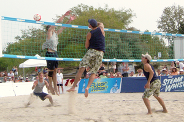

Get in Contact.
Contact Slammers Beach Club
Here at Slammers Beach Volleyball Club, we value all members, guests, staff and feedback. So if you have something to say, we want to know about it! You can contact us via the below methods:
Phone - 047 712 233
Fax - 4771 2244
Postal Address: 123 Pokemund Street, Cairsville
Email: slammers@gmail.com
Participants in Slammers Beach Volleyball play at their own risk. Anyone playing is responsible for their own safety and should only play if capable. Check with your doctor before you begin. Game fees must be paid prior to the start of a game. Games may be cancelled by players up to 4 hours beforehand to claim a refun. Without 4 hours' notice, participants will forfeit the game and be charged 50% of the game fee.